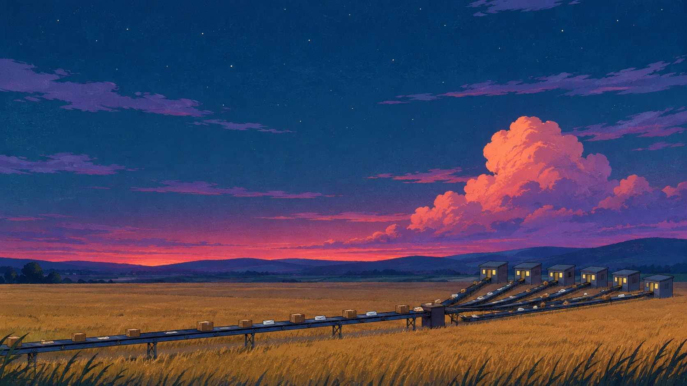

Qui je suis
Nils Davoine. Cinq ans d’IA, mise au travail dans votre bureau.
Fondateur d’AiAllDesk · Luxembourg · français, anglais, allemand
Le parcours
D’où je viens.
- Consultant indépendant en IA et automatisation
Douze entreprises accompagnées en France, au Luxembourg, en Allemagne et en Suisse, de l’analyse des tâches du quotidien à l’outil en service.
- Transformation numérique d’un cabinet comptable, Luxembourg
Des assistants documentaires sur les documents du cabinet ; la mise en service et le suivi des modèles.
- Développeur d’applications et de contenus génératifs, Equinoxe (événementiel)
Six applications livrées en quatre mois ; plusieurs heures de contenu visuel produites automatiquement.
- Chercheur doctorant en intelligence artificielle, Université du Luxembourg
Onze logiciels écrits ; coauteur de QCell, publié en 2026 dans la revue AI for Science ; enseignement de la programmation.
- Fondateur de trois produits en ligne
Collecte de données web, recherche de mots-clés pour le référencement, montage automatique de vidéos. Exploités de un à trois ans, aujourd’hui arrêtés.
- Recherche doctorale en IA, Université du Luxembourg
Master 2 à l’Université Paris Cité, avec grande distinction.
Votre besoin, mon expérience
Vous avez un besoin. Je l’ai déjà réglé ailleurs.
Votre besoin
- Automatiser une tâche répétéeFacturation, relances, tri des courriels et réponses préparées, prise de rendez-vous, calendrier d’entreprise, publications sur les réseaux, suivi des tâches : mis en place dans 12 entreprises, pour l’administratif, les finances, le commercial, le marketing et les RH.
- Tout piloter depuis un seul endroitDes outils internes qui relient les logiciels du quotidien et enchaînent les tâches automatiquement ; des logiciels de suivi des clients développés et automatisés.
- Un assistant qui connaît vos documentsDes assistants documentaires mis en service pour les différents métiers, dont un cabinet comptable luxembourgeois.
- Une IA qui tourne chez vousDes modèles allégés et réentraînés pour fonctionner sur vos propres machines ; la lecture automatique de documents, en local ou par Microsoft 365.
- Un assistant spécialisé dans votre métierDes assistants qui tiennent un rôle précis, et l’accueil des nouveaux arrivants guidé par un assistant.
- Une IA qui tient dans la duréeLa mise en service et le suivi des modèles, en cabinet comptable.
- Produire des images et des vidéosDes chaînes de génération automatique : plusieurs heures de contenu visuel pour l’événementiel.
- Construire le logiciel autour6 applications mobiles et jeux, 11 logiciels scientifiques, 3 produits en ligne, des sites et des espaces clients sécurisés, des bases de données à grande échelle.
- De la rigueurTrois ans de recherche et un article publié en revue ; un développement qui suit le référentiel de sécurité OWASP.
- Des équipes autonomesDes formations à l’automatisation dans des TPE et des PME de 4 pays ; l’enseignement de la programmation à l’université.

Audit gratuit
Montrez-moi la tâche qui vous pèse.
Une heure, sur une tâche qui vous prend du temps. Vous recevez ensuite un compte rendu écrit : ce qui peut changer, ce que cela vous rendrait, et ce que cela coûterait.
Écrivez à adresse de courriel à venir
Dites-moi en trois lignes : votre société, la tâche qui vous prend du temps, et quand vous joindre.
Ou écrivez-moi sur LinkedIn.
- Gratuit, et libre de s’arrêter là.
- Vos dossiers restent confidentiels.
- Réponse en deux jours ouvrés, par moi.